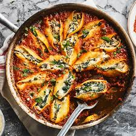

Stuffed Shells

Description
Stuffed shells are a comforting Italian-American pasta dish made with large pasta shells filled with a creamy
ricotta cheese mixture, then baked in marinara sauce and topped with melted cheese.
This hearty dish is perfect for family dinners, potlucks, or make-ahead meals, offering a rich, cheesy, and
satisfying flavor in every bite.
Ingredients
- Jumbo Pasta Shells
- Ricotta Cheese
- Mozzarella Cheese
- Marinara Sauce
- Parmesan Cheese
Steps
- Preheat oven to 375°F (190°C).
- Cook the pasta shells according to package instructions until al dente.
Drain and rinse under cold water to stop cooking.
Set aside on a tray to prevent sticking.
- Prepare the filling:
In a bowl, mix ricotta, half of the mozzarella, Parmesan, and optional herbs like parsley or basil.
Season with salt and pepper to taste.
- Fill each shell with the ricotta mixture using a spoon or piping bag.
- Assemble the dish:
Spread a layer of marinara sauce in the bottom of a baking dish.
Place the filled shells on top of the sauce in a single layer.
Spoon more marinara over the shells and sprinkle with the remaining mozzarella.
- Cover with foil and bake for 25–30 minutes.
- Uncover and bake for an additional 10–15 minutes, until the cheese is bubbly and slightly golden.
- Let rest for 5 minutes before serving.